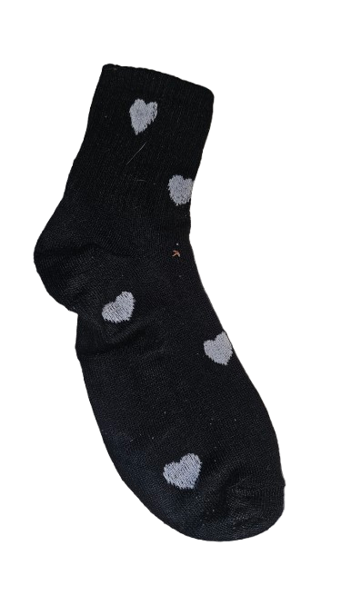
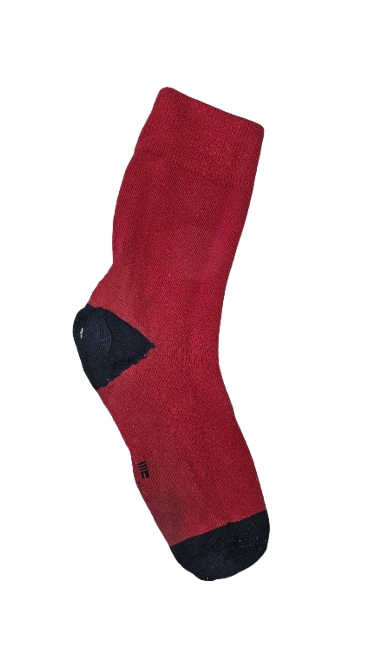
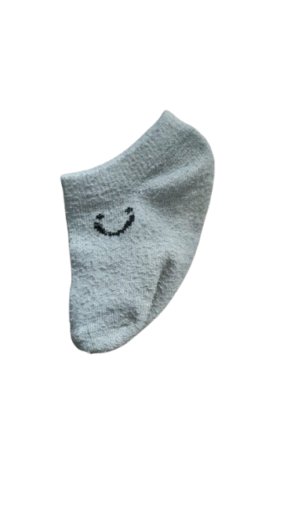
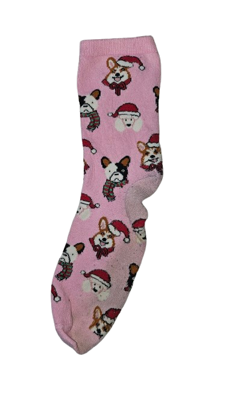

Noire à coeur blanc
Célibataire depuis 13 lavages
Rescapée d’un essorage trop brutal.
🏷️ Reçue d'un amour de vacance
🔍Une relation durable (ou au moins jusqu’au prochain trou)
💔 Célibataire

Rouge à talon noir
Célibataire depuis 3 lavages
Seule depuis un vol sur fil à linge par un volatile haineux lors d'une envolée sauvage.
🏷️ Boutique souvenir dans les Ardennes Belge
🔍Une chaussette douce et attentionnée, prête à partager des moments chaleureux.
💔 Célibataire

Mini socquette brugeoise
Célibataire depuis 2 jours
Glissée du pied d’un bébé tout potelé, elle cherche désormais sa moitié.
🏷️ Une rue commerçante à Bruges
🔍Recherche un bébé aux chevilles solides pour affronter un apprentissage de la marche intense.
💔 Célibataire

Rose et chien de noël
Célibataire depuis 67 lavages
Trouvée sous un canapé, elle espère désormais sortir de l’ombre pour rencontrer sa moitié.
🏷️ Perdue à un Noël endiablé
🔍Recherche relation scolaire sans bulletin de notes, mais avec beaucoup de complicité
💔 Célibataire